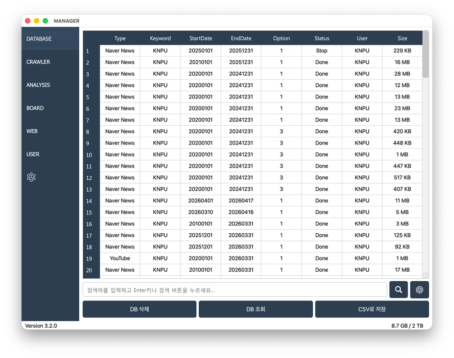
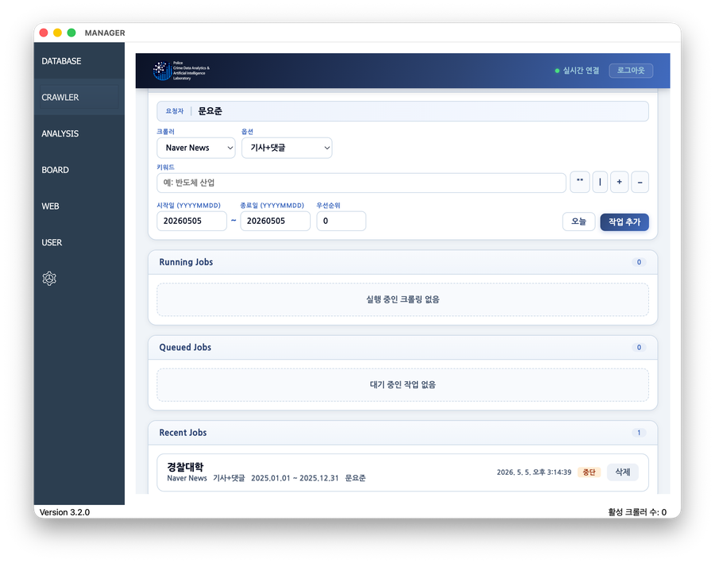
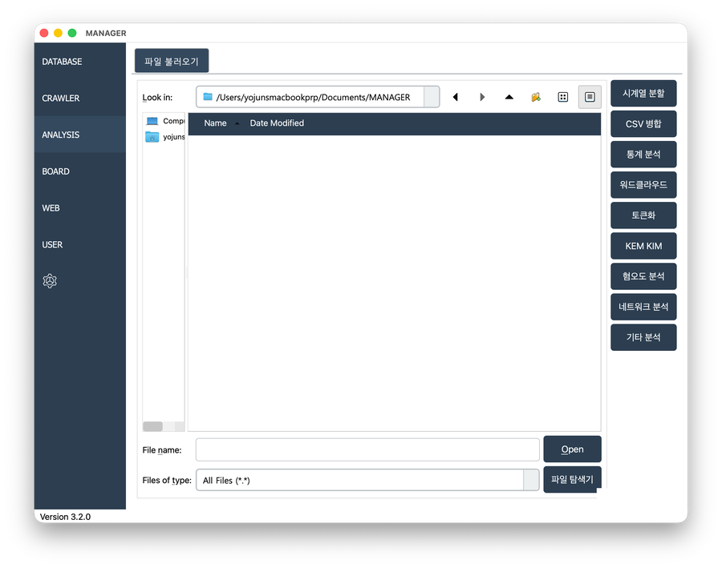
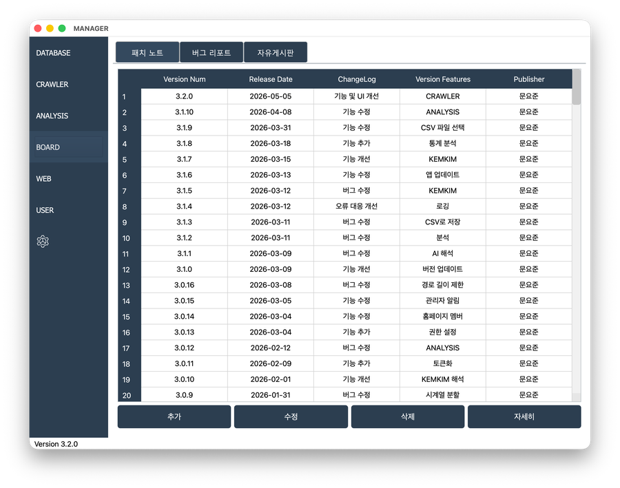
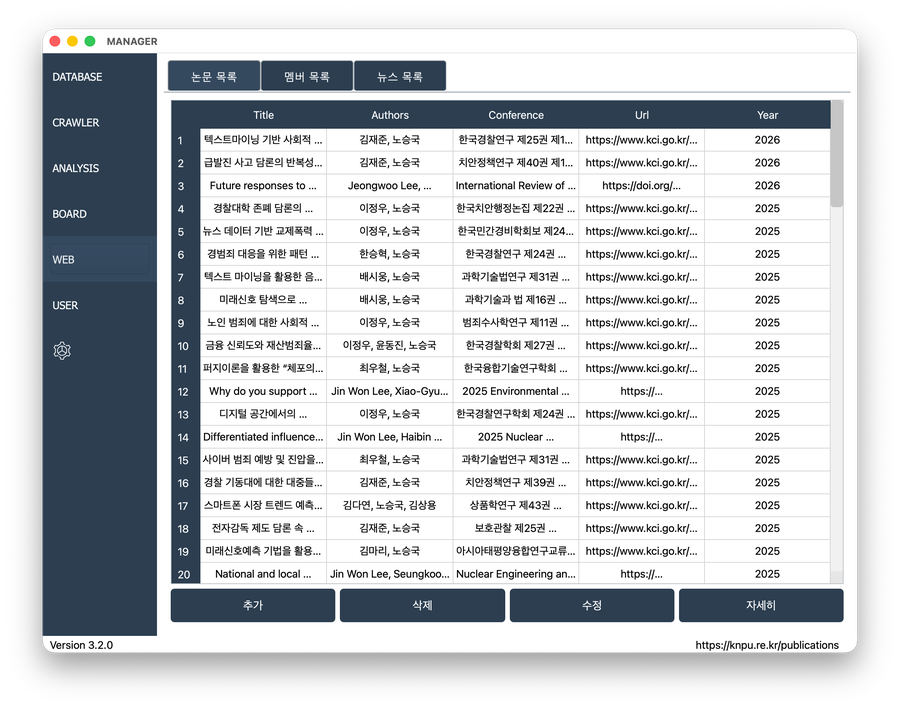
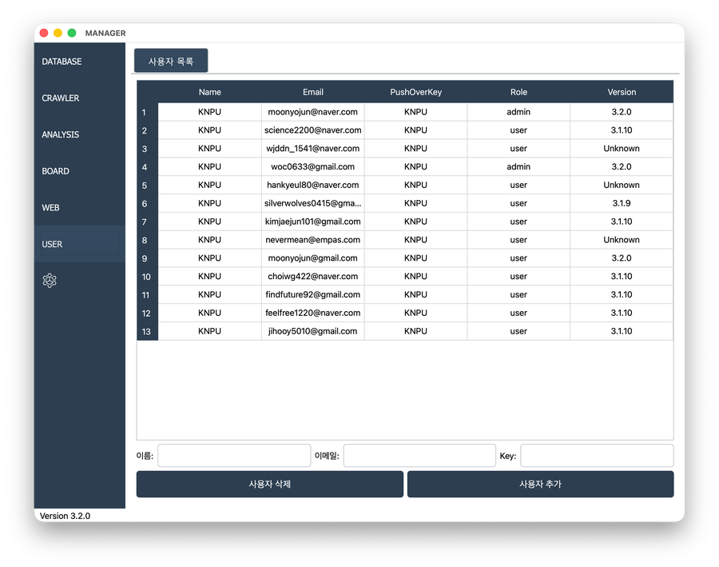
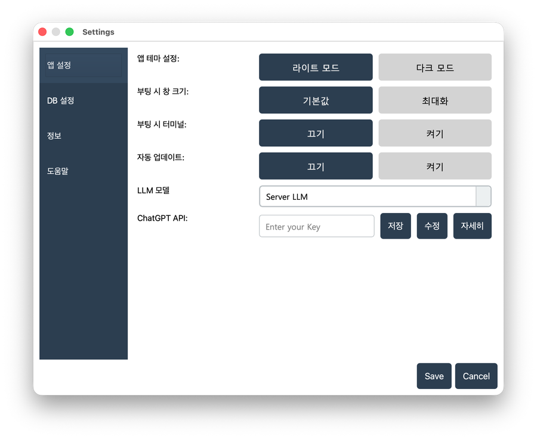

Download MANAGER
1. DATABASE
DATABASE 섹션에서 Resource DB와 관련된 모든 작업을 처리할 수 있습니다. 데이터 조회, 검색, 병합 및 저장 등의 다양한 인터페이스를 제공합니다.

2. CRAWLER
CRAWLER 섹션에서 지정된 웹사이트의 데이터를 자동 수집하고 데이터베이스애 저장할 수 있습니다.

3. ANALYSIS
ANALYSIS 섹션에서 빅데이터 분석, 시각화할 수 있습니다.

4. BOARD
BOARD 섹션은 릴리스 정보 확인, 버그 제보 및 커뮤니티 소통을 위한 공간입니다.

5. WEB
WEB 섹션에서 Homepage의 데이터를 관리할 수 있습니다.

6. USER
USER 섹션은 사용자 계정 관리를 위한 공간입니다.

7. SETTING
SETTING 섹션은 프로그램 전반의 환경 설정을 제어합니다.
